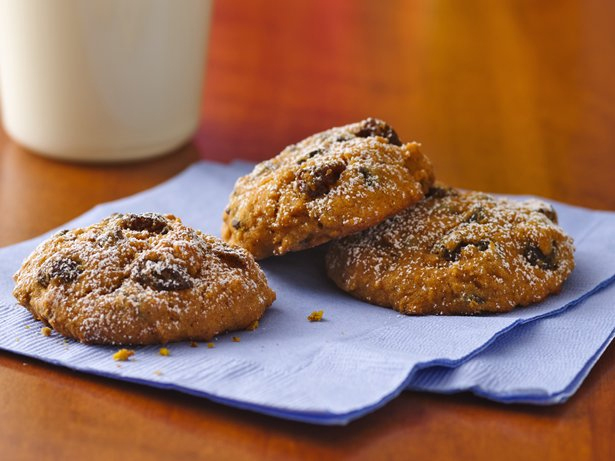

Gluten Free Pumpkin Chocolate Chip Cookies

Betty Crocker® Gluten Free chocolate chip cookie mix, pumpkin and a pinch of spice bake into yummy homemade cookies.
Ingredients
- 3/4 cup canned pumpkin (not pumpkin pie mix)
- 1/4 cup butter, softened (not melted)
- 1 teaspoon vanilla
- 1 egg
- 1 box (19 oz) Betty Crocker® Gluten Free chocolate chip cookie mix
- 1/2 cup raisins, if desired
- 1/4 teaspoon ground cinnamon
- Powdered sugar, if desired
Steps
- Heat oven to 350°F. Grease cookie sheets with shortening.
- In large bowl, stir pumpkin, butter, vanilla and egg until blended. Stir in cookie mix, raisins and cinnamon until soft dough forms. Drop dough by rounded tablespoonfuls 2 inches apart on cookie sheets.
- Bake 10 to 12 minutes or until almost no indentation remains when lightly touched in center and edges are golden brown. Immediately remove from cookie sheet to cooling rack. Cool completely, about 15 minutes. Sprinkle with powdered sugar.